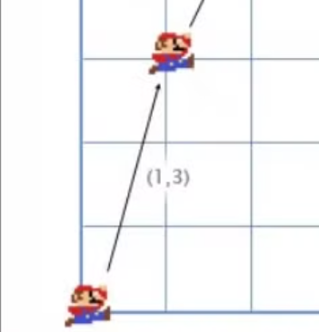
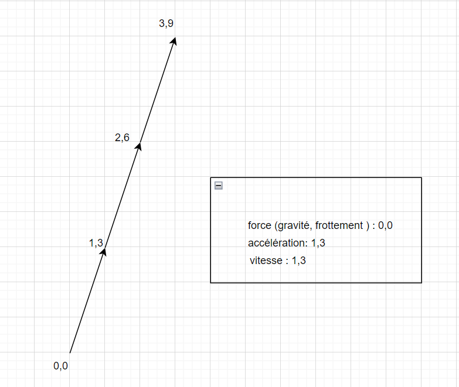

Par exemple :

Dans les jeux un vecteur est utilisé pour stocker une position, une direction et une vitesse dans un espace donné.
Par exemple :
La position du vecteur indique que le personnage se situe à 2 mètres (ou autre) vers la droite et 1 mètre vers le haut.
La vélocité montre qu’en 1 minute l’avion bouge de 3 (km) vers le haut et 2 km vers la gauche par rapport à l’origine.
La direction du vecteur montre que le pistolet est orienté vers la droite. \(\pagebreak\)
Par exemple :
(0, 1, 4) + (3, -2, 5) = (0 + 3, 1 - 2, 4 + 5) = (3, -1, 9)
Prenons l’exemple de Mario. Il commence à la position (0, 0). Il décide de sauter donc on applique à sa position une vitesse de (1, 3).
 \(\pagebreak\)
Une fois à la position (1,3) s’il n’y a pas de gravité/frottement ou ce que vous voulez a appliquer sur l’accélération, Mario continuerai infiniment de monter de (1, 3) car la vitesse du vecteur resterai inchangé comme on peut le voir dans l’exemple ci-dessous :
 \(\pagebreak\)
Tout au long du saut son accélération est de (0, -1) car la gravité le pousse vers le bas mais toujours vers la droite. C’est pourquoi la vitesse suivante de Mario se trouve en (1, 2) car on applique a sa vitesse l’accélération soit \(\rightarrow\) v + a = (1, 3) + (0, -1) = (1 + 0, 3 - 1) = (1, 2) et ainsi de suite a chaque frame.
\(\pagebreak\)
Les soustractions de vecteur fonctionnent de la même manière que les additions et également par frame.
La soustraction de vecteur est souvent utilisée pour trouver le vecteur d’une position vers une autre.
Par exemple le joueur poster à la position (1, 2) avec le fusil laser et le robot situé en (4, 3) comme ci-dessous :

Pour retrouver le vecteur que le laser devra parcourir pour toucher le robot, on peut soustraire la position du joueur avec celle du robot.
(4, 3) - (1, 2) = (4 - 1, 3 - 2) = (3, 1)
Quand on parle de vecteur, on désigne les nombres seuls ( individuels) en tant que scalaire.
Par exemple :
(3, 4) est un vecteur
5 est un scalaire
Dans les jeux, on utilise souvent un scalaire pour multiplier un vecteur comme par exemple pour simuler la résistance de l’air, on peut multiplier la vitesse du joueur par 0.9 à chaque frame. Pour faire cela, on multiplie simplement chaque composant du vecteur par le scalaire.
Si le joueur a une vitesse de (10,20), la nouvelle vitesse sera :
0.9 * (10, 20) = (0.9 * 10, 0.9 * 20) = (9, 18)
Si nous avons un bateau avec un vecteur dont la vitesse est (4,3), connaître sa vitesse nous permettrai de calculer par exemple le niveau de tremblement de l’écran ou bien sa consommation en essence. Pour savoir cela nous avons besoin de la longueur du vecteur V. La longueur d’un vecteur s’écrit en utilisant ||, on notera donc la distance de V → |V|
On admettra que V est un triangle rectangle ( voir exemple ci-dessous) avec pour côté 4 et 3 et utiliser le théorème de Pythagore pour trouver l’hypoténuse x2 + y2 = h2
Il s’agit de la longueur du vecteur H avec les composant (x, y) est \(\sqrt{x^2 + y^2}\).
Pour calculer la vitesse du bateau on utilise juste :
|V| = \(\sqrt{4^2 + 3^2}\) = \(\sqrt{(25)}\) = 5

Si le joueur P est en (3,3) et qu’il y a une explosion E en (1,2), nous avons besoin de trouver la distance entre le P et E pour voir combien de dommage le joueur prendra. Afin de trouver cela, il faudra combiner deux outils que l’on a déjà vu avant. la soustraction de vecteur et la longueur. Il faut donc soustraire P-E pour trouver le vecteur entre eux et ensuite trouver la longueur de ce vecteur afin de récupérer la distance entre eux. L’ordre n’a pas d’importance ici, |E-P| nous donnera le même résultat.
Distance = |P-E| = |(3, 3) - (1, 2)| = \(\sqrt{(2^2 + 1^2)}\) = \(\sqrt{(5)}\) = 2,23
Lorsqu’il s’agit de la direction (par opposition à la position ou à la vitesse), il est important qu’ils aient une longueur unitaire (longueur de 1). Cela nous facilite grandement la tâche. Par exemple, supposons qu’un pistolet pointe dans la direction (1,0) et qu’il tire une balle à 20 m/S. Quelle est la vitesse : (20,0). Si le vecteur de direction avait une autre longueur, nous ne pourrions pas faire cela : la balle serait trop rapide ou trop lente.
Un vecteur de longueur 1 est dit « normalisé ». Comment normaliser un vecteur (fixer sa longueur à 1) ? Il suffit de diviser chaque composante par la longueur du vecteur. Si nous voulons normaliser le vecteur V avec la composante (3,4), il suffit de diviser chaque composante par sa longueur, 5, pour obtenir (3/5, 4/5). Nous pouvons maintenant utiliser le théorème de Pythagore pour prouver que le vecteur a une longueur de 1 :
\(\frac{3}{5^2}\) + \(\frac{4}{5^2}\) = \(\frac{9}{25}\) + \(\frac{16}{25}\) = \(\frac{25}{25}\) = 1